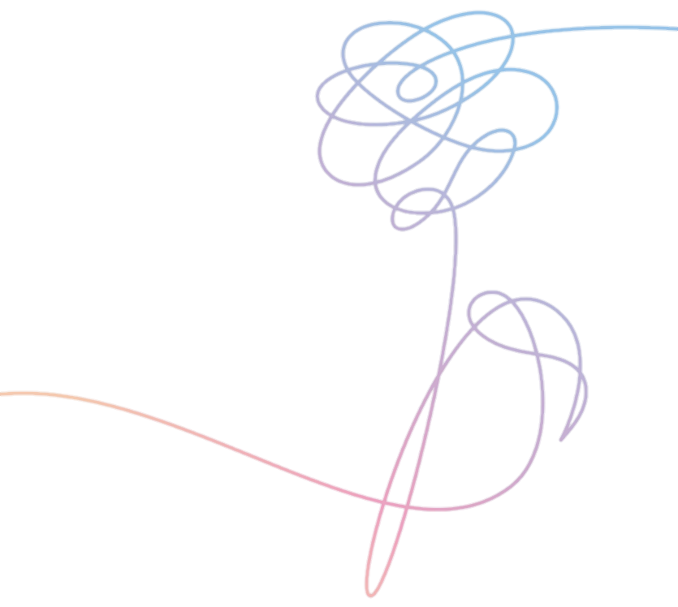

<div class="menu">
    <ul nz-menu nzMode="inline" style="width: 20vw;" [nzTheme]="'light'">

        <div class="list">
            <ul>
                <div class="texto">

                    <nz-input-group style="background: #DDC8F8;" [nzSuffix]="suffixIconSearch">
                        <input type="text" [(ngModel)]="inputSearch" nz-input placeholder="search profiles" />
                    </nz-input-group>
                    <ng-template #suffixIconSearch>
                        <i nz-icon nzType="search" routerLink="/profiles/{{inputSearch}}" routerLinkActive="router-link-active"></i>
                    </ng-template>
                </div>
                <div class="texto">
                    <li nzIcon="home" nz-menu-item [routerLink]="['/home']" routerLinkActive="router-link-active"><i nz-icon nzType="home" nzTheme="outline"></i>Home</li>
                </div>
                <div class="texto">
                    <li nz-menu-item [routerLink]="['/profile']" routerLinkActive="router-link-active">
                        <i nz-icon nzType="profile" nzTheme="outline"></i> Profile</li>
                </div>
                <div class="texto">
                    <li nz-menu-item [routerLink]="['/following']"><i nz-icon nzType="mail" nzTheme="outline"></i>Messages</li>
                </div>
                <div class="texto">
                    <li nz-menu-item (click)="logout()"><i nz-icon [nzIconfont]="'icon-tuichu'"></i>Logout</li>

                </div>
                <div class="texto">
                    <button nz-button [nzType]="'default'" (click)="showModal()"><span>Write</span></button>
                </div>
            </ul>
            <div class="texto"> </div>
        </div>

    </ul>

</div>